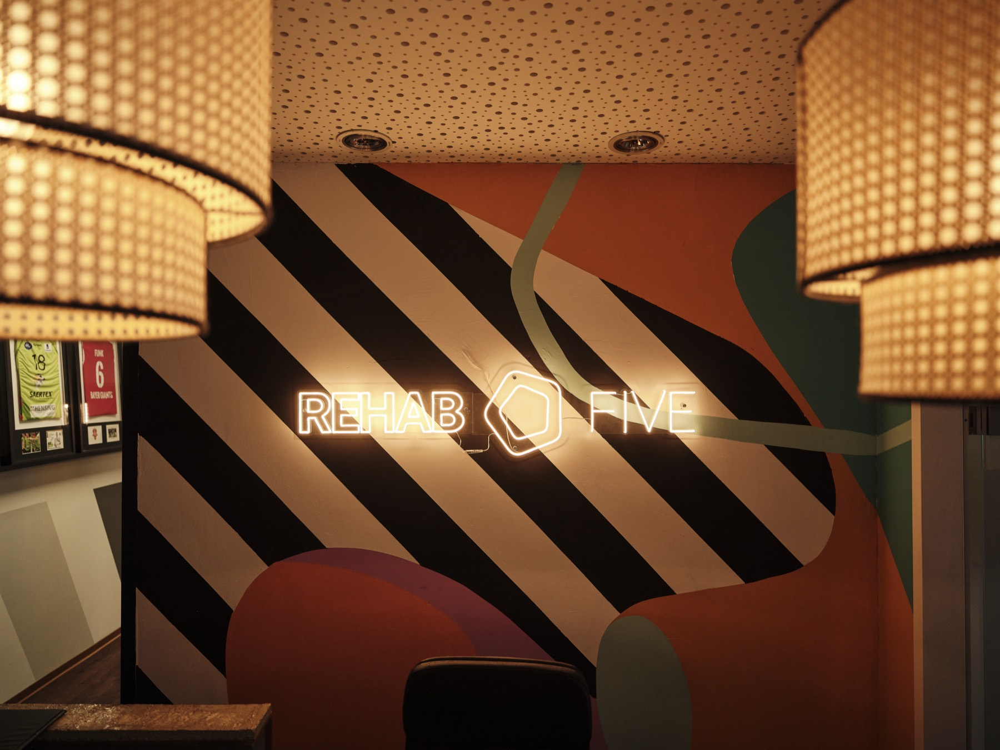
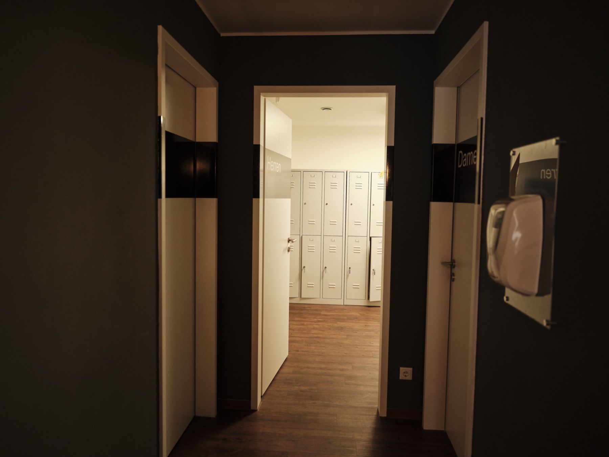

Nutrition
REHAB FIVE NUTRITION
Weseler Straße 7148151 Münster
- Individuelle 1:1-Beratung
- Folgetermine optional per Video
- Mit allen gesetzl. Kassen abrechenbar
- ÖPNV-Anbindung & Parkplätze
- Mo–Do 8:00–20:00 · Fr 8:00–17:00
Standort
Persönliche Beratung in ruhiger 1:1-Atmosphäre — gut erreichbar mit ÖPNV und Auto. Folgetermine optional auch per Video.





Auch in Münster
REHAB FIVE bietet auch Physiotherapie an drei weiteren Standorten in Münster sowie funktionelles Training, Pilates und Präventionskurse im Health Club.
Termin sichern
Gratis 15-Min-Kennenlern-Call oder direktes Erstgespräch (95 €, ggf. erstattungsfähig). Wir besprechen Ziele, Diagnosen und Alltag — und sagen ehrlich, ob wir passen.